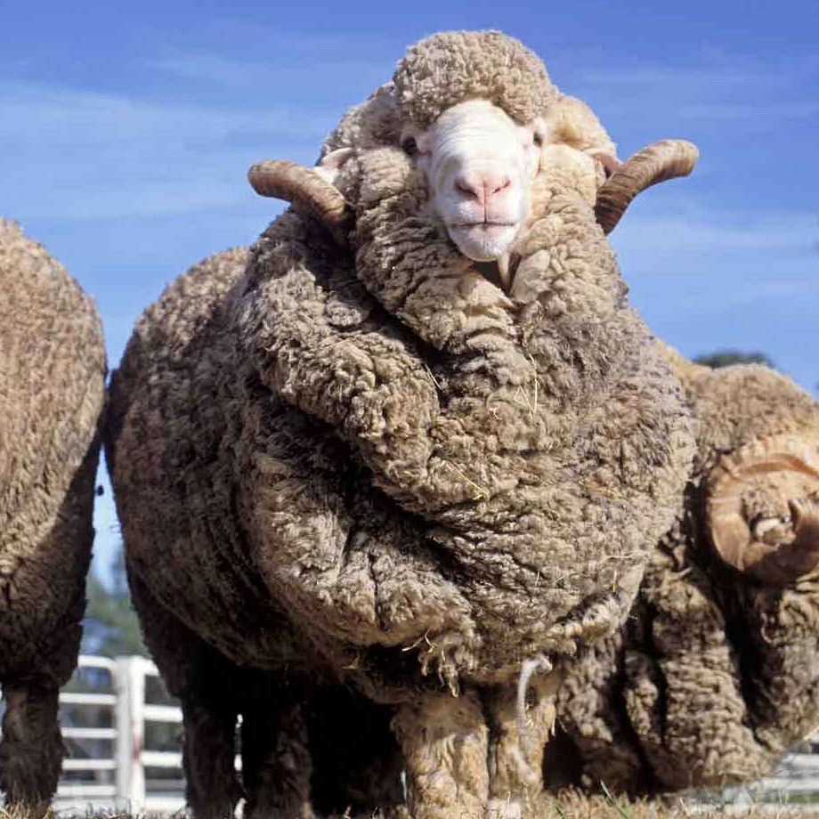
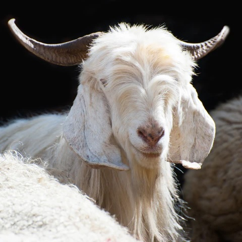
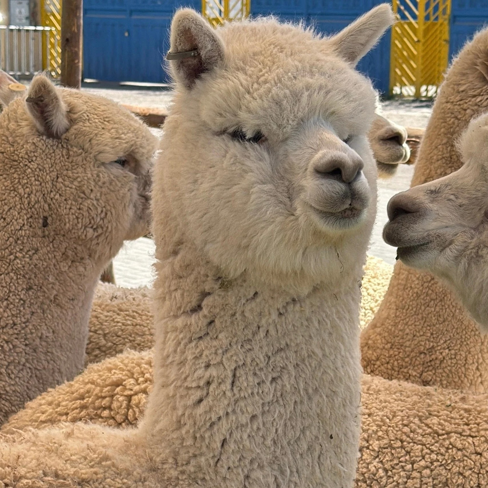
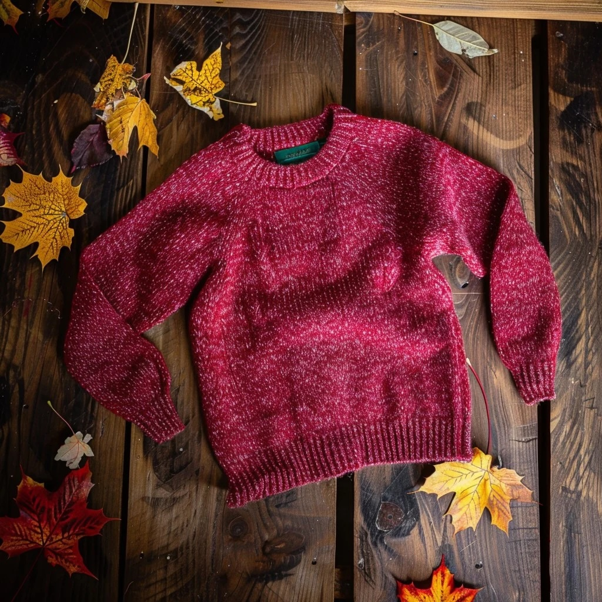
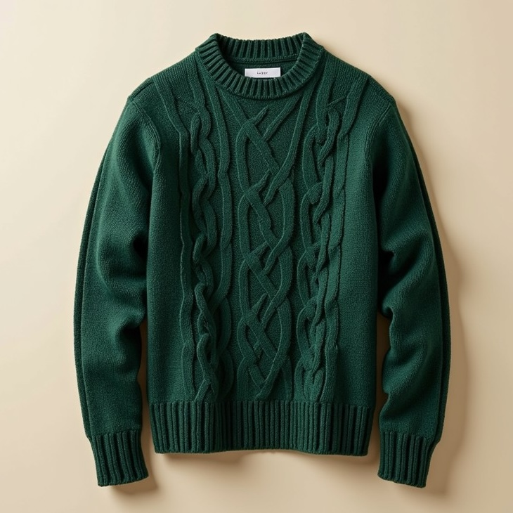
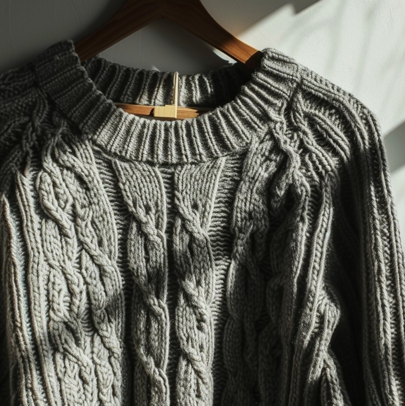

Why Hearth Sweaters?
Choosing our company means getting more than just a high-quality wool sweater—it means making a purchase that reflects your values. We use ethically sourced wool to ensure animal welfare and minimize environmental impact, while also partnering with Fair Trade Certified, a charity focused on ethically sourced clothing to give back to communities in need. Every piece you buy supports responsible production and contributes to a greater cause, so you can feel confident that your choice is both stylish and meaningful.
Read Our Mission StatementMaterials
Good wool types stand out for their softness, durability, and comfort. Choosing high-quality wool not only feels better against your skin but also ensures your clothing lasts longer and performs well in different temperatures. Merino wool is exceptionally soft and breathable, making it comfortable to wear while naturally regulating body temperature in both warm and cold conditions. It’s also moisture-wicking, odor-resistant, and durable, making it ideal for everyday wear and active use.
Merino Wool

Merino wool is exceptionally soft and breathable, making it comfortable to wear while naturally regulating body temperature in both warm and cold conditions. It’s also moisture-wicking, odor-resistant, and durable, making it ideal for everyday wear and active use.
Cashmere Wool

Cashmere wool is incredibly soft and lightweight, offering luxurious comfort while providing excellent insulation in cold weather. It’s also breathable and durable when properly cared for, making it a high-quality, long-lasting fabric choice.
Alpaca Wool

Alpaca wool is soft, lightweight, and exceptionally warm, thanks to its naturally insulating fibers. It’s also hypoallergenic, moisture-wicking, and durable, making it a comfortable and long-lasting choice for everyday wear.
Products
Our sweaters are thoughtfully designed in rich, earthy tones that reflect the natural beauty of fall and winter landscapes. Inspired by deep browns, forest greens, and muted neutrals, each piece blends seamlessly with the season's surroundings. Combining comfort, style, and a connection to nature, our collection is made to keep you feeling cozy while looking effortlessly refined.

Autumn Red Sweater
Our autumn red merino wool sweater brings together rich seasonal color and responsibly sourced craftsmanship. Made from ethically sourced merino wool, it offers exceptional softness, breathability, and natural temperature regulation for all-day comfort. It’s a timeless piece designed to keep you warm while reflecting a commitment to sustainability.

Forest Green Sweater
Our forest green cashmere sweater captures the calm richness of the season while reflecting our commitment to ethical sourcing. Crafted from responsibly sourced cashmere, it offers an ultra-soft, lightweight feel with exceptional warmth. It’s a timeless, refined piece designed for comfort, durability, and conscious style.

Charcoal Gray Sweater
Our charcoal gray alpaca wool sweater is inspired by the quiet stillness of winter, offering a sleek, versatile look for colder days. Crafted from ethically sourced alpaca wool, it delivers exceptional warmth, softness, and durability without added weight. It’s a timeless piece designed to keep you comfortable while embracing a more mindful approach to winter style.
Find Us
Ready to find your perfect sweater? We’re here to help you choose, care for, and enjoy your Hearth Sweaters for years to come. Reach out anytime—we’d love to hear from you.
123 Main St,
Anytown, USA